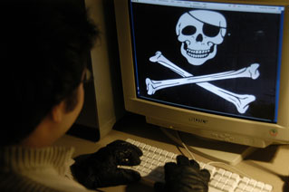

Droits d'auteur et internet
Musique, films et logiciels en sont affectés.
Piratage ou partage ?
Quel est
l'impact du phénomène sur les industries culturelles ?
Quelles sont les
nouvelles régulations en cours ?
Internet : une pratique qui met à mal le droit d'auteur

Le téléchargement par le peer-to-peer (échange de fichiers entre internautes, ou
P2P) change la donne de la production, de la valorisation et de la diffusion de
la création culturelle sur internet. Aussi bien la Fondation internet nouvelle
génération (FING) que l'Association française de l'internet mobile (AFIM)
confirment que le P2P représenterait au moins 60% du trafic ADSL en 2004, avec
des pointes à 80% pour le trafic de nuit.
Or le P2P est vecteur de copie, de recel illicite de contenus et a pour
conséquence de porter atteinte aux intérêts des auteurs définis dans le Code de
la propriété intellectuelle.
Le développement de ce téléchargement " sauvage " est lié à l'idée d'accès
gratuit à l'oeuvre. L'utilisateur, qui a pay' son ordinateur, ses périphériques
et son accès avec un abonnement ADSL est encouragé au téléchargement par le
marketing musical, qui en fait un argument de vente des équipements.
Les réseaux P2P sont également une traduction des principes fondateurs d'internet
: l'échange direct de fichiers musicaux, audiovisuels ou de logiciels en dehors
des circuits de distribution traditionnels. Pour ses utilisateurs, le P2P permet
d'échanger librement et de partager les connaissances, de créer des réseaux de
proximité.
Mais, pour les majors (Universal, Sony, EMI, Warner) et l'industrie française du
disque, le P2P est associé à un manque à gagner. En France, la Société civile
des producteurs phonographiques (SCPP) et le Syndicat national des éditeurs
phonographiques (Snep) ont ainsi engagé, depuis juin 2004, des actions pénales
et civiles contre les usagers de systèmes d'échange P2P, qui ont abouti à une
cinquantaine de plaintes.
Vers un durcissement de la protection du droit d'auteur sur internet
Des évolutions législatives récentes s'efforcent d'encadrer les pratiques et
usages de l'internet. La loi du 13 mai 2004 pour la confiance dans l'économie
numérique règlemente les transactions liées au commerce électronique. Celle du 6
août 2004 autorise, sous le contrôle de la Cnil, la création par les sociétés de
perception et de répartition des droits d'auteurs de "fichiers de
contrevenants", ou "listes noires" d'internautes faisant du téléchargement
illégal.
Le projet de loi relatif au droit d'auteur et droits voisins dans la société de
l'information, présenté en conseil des ministres le 12 novembre 2003 et
actuellement examiné au Parlement, légalise les dispositifs de protection
anti-copie pour les auteurs et les ayants droit qui diffusent leur oeuvre sur
internet. Il instaure des sanctions pénales en cas de contournement des mesures
techniques anti-contrefaçon.
Le 28 juillet 2004, sous l'impulsion du gouvernement, une charte est signée à
l'Olympia entre la SCPP, le SNEP et les fournisseurs d'accès internet (FAI).
Elle prévoit le développement et la promotion de l'offre légale de musique en
ligne, des actions de sensibilisation des internautes au respect des droits de
propriété intellectuelle sur Internet. Figure aussi un engagement conjoint de
lutter contre le téléchargement illicite d'oeuvres protégées.
Pour aller plus loin
Droits d'auteur et internet http://www.vie-publique.fr/
Chronologie : la régulation de l'internet depuis 1998 http://www.vie-publique.fr/
Les rapports http://www.vie-publique.fr/